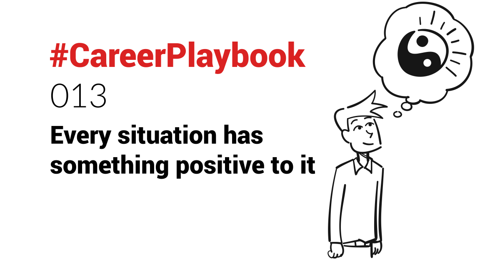

I lost my parents (and grandparents) quite early in life.
I do miss them, and especially their support and belief in me (or lack thereof at times - I'm the challenger type! 🤷🏻♂️).
But those hardships taught me to focus on the positive - and there is quite a bit of it.
Facing death, regularly, has taught me:
- to enjoy life (in my own way)
- to focus on the positive
- to put things in perspective, not getting upset for small problems in daily life
- to assess risk on a grander scale ("What's the worse that can happen?")
- to be appreciative of the family I co-founded 🤗
- to support others, as one can't always count on the support of close ones
In hindsight, I find these events have made me a better person.
The bottom line is that every situation has something positive to it - or will trigger something positive later on, even if it's just learning something that will help you in the future.
Didn't get that promotion?
Make use of the bandwidth it gives you (you're working on "auto-pilot", as you know your job well) to learn new skills or focus on your (young) family. Your time will come.
Didn't close a deal?
What learnings can you absorb that will maximise your chances of closing your future deals?
The plural here is important, and can mean losing that one deal might be extremely positive in the long run. If you learn what do things better in the future and consistently, you might increase your close rate from 20% to say 40% (whatever your metrics are). That increased close ration in the long-run reduces your Customer Acquisition Cost, and increases your revenues.
Someone stole your idea?
Ideas are cheap (I have way too many for my own sake!), it's execution that matters. And it proves you are coming up with ideas other people see value in.
Focus on iterating on that idea to improve it further or finding new ideas.
Tried starting a business and failed?
You will be wiser from it. It was an investment in yourself first and foremost. You might have spent more doing a MBA, and would have gotten less value from it. And think that most (serial) successful entrepreneurs do not make a success out of all their ventures, especially the first one. Your next one might be the one.
Going through relationship issues or a divorce?
Think that at the end of the tunnel, it will mean you can reconstruct a better life, using the learnings.
This can be applied to every aspect of one's life, and especially in business where there are a lot of frustrations, setbacks and struggles.
Whatever situation you are going through, identify and focus on the positive.
It is not always to do when in the midst of it 😅, but just knowing that there WILL be some positive coming from it, is already helpful. At least for me.
I also think the more someone goes through hardships, the more they are appreciative of the positives. The challenge is to keep focusing on them.
Don't fear failure - it will make you a better person.